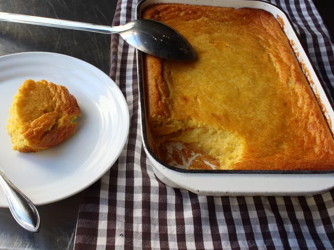

Chef John's Creamy Corn Pudding

Description
Corn pudding doesn't get the same attention as some other holiday side dishes,
but it's a real crowd-pleaser that pairs perfectly with all your favorite special-occasion meats.
Ingredients
- 2 pounds frozen yellow corn, thawed and drained
- 3 tablespoons maple syrup
- 6 large eggs
- 1/2 cup milk
- 3 teaspoons koaher salt (cut in half using fine salt)
- 1/4 teaspoon cayenne pepper
- 1/4 cup all-purpose flour
- 1 teaspoon baking powder
- 1 1/2 cups heavy cream
- 1/2 cup melted butter, divided
Directions
-
Preheat the oven to 350 degrees G (175 degrees C). Line a rimmed baking sheet with a silicone pad.
Place and 8x11-inch baking dish on the pad.
-
Place corn in a blender or food processor. Add maple syrup, eggs, milk, kosher salt, cayenne pepper,
flour, and baking powder.
Mix briefly with a spatula to push down the dry ingredients.
-
Pulse mixture until it begins to come together. Then increase setting to high and blend until completely smooth, 2 or 3 minutes.
Transfer mixture to a mixing bowl. Add heavy cream and 2/3 of the melted butter. Whisk to thoroughly blend.
-
Grease the baking dish with the rest of the butter. Pour batter into the baking dish.
Bake in the preheated oven on the baking sheet until the pudding is browned and set,
between 60 and 75 minutes depending on the size and shape of your baking dish.